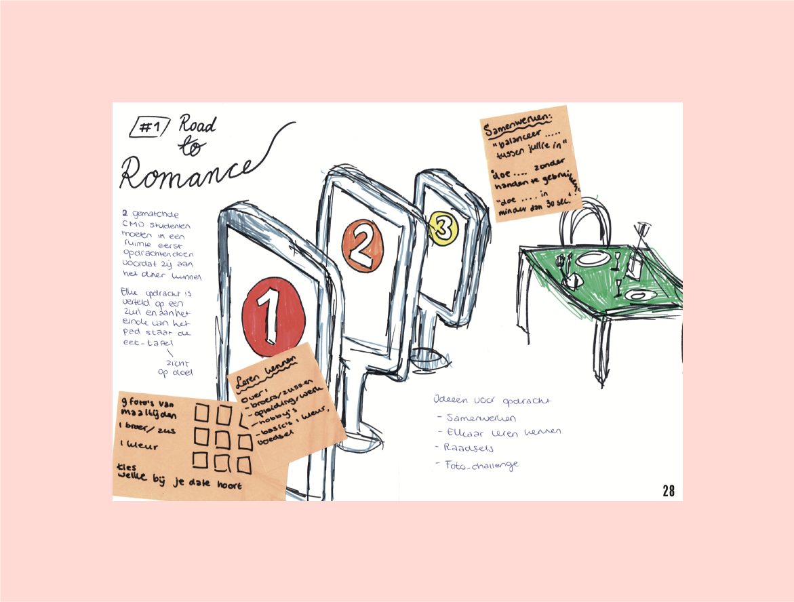
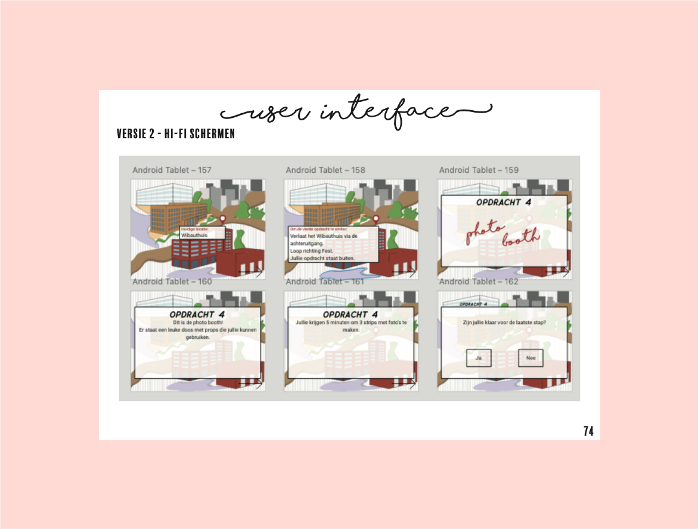
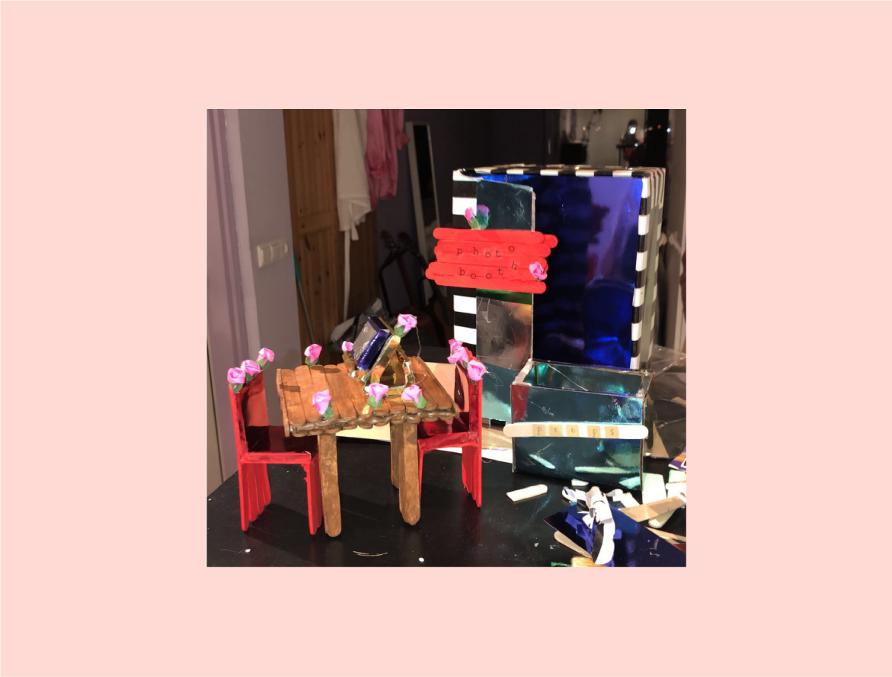

Situatie
Het programma First Dates, bekend van TV, heeft hulp ingeschakeld bij CMD studenten. Het idee was een nieuwe, interactieve dating experience. Veel dingen mochten de studenten zelf bedenken, dit heeft geleid tot uitbundige ideeën.
Het was dus de bedoeling dat het een dating experience werd, voor een zelf uitgekozen doelgroep. De eisen waren dat er een fysiek en digitaal component aanwezig zijn, een smartphone schermpje was hiervoor niet voldoende.
Taak
Aan mij dus de taak om deze regels zelf verder uit te werken en na te gaan denken over mijn conceptrichting.
Activiteit
Ik ben begonnen met veel onderzoek; onder andere desk research en een doelgroep onderzoek door middel van een survey onder de CMD studenten. Daarna heb ik veel brainstorms gedaan en conceptrichtingen uitgewerkt om zo tot een uiteindelijk idee te komen.
Ik heb veel getekend, geschetst en uitgewerkt, maar er zijn twee dingen waar ik erg trots op ben. Zo heb ik een storyboard in de vorm van een stop motion video gemaakt, wat ik niet alleen ontzettend leuk vond maar ook erg goed overkwam op het publiek.
Ook heb ik voor mijn eindpresentatie een aantal marquettes uitgewerkt, props die de studenten ook tegen zouden komen als zij mijn dating speurtocht zouden doen. Ik heb hier hard aan gewerkt en ook zeker geknutseld, dit heeft geleid tot iets wat ik echt heel erg leuk vond om te doen en veel indruk maatke op de mensen om mij heen.
Resultaat
Zoals ik eerder al benoemde ben ik erg tevreden met dit resultaat. Dat heeft er ook mee te maken dat ik in het begin van het project gewoon echt niet wist wat ik hier mee aan moest, welke richting ik op moest en wat mijn eindproduct zou worden. Ik heb het echt even lastig gehad maar ben uiteindelijk echt gekomen op een concept waar ik echt trots op ben.
Reflectie
Tijdens dit project heb ik veel geleerd, ik vond de vele brainstormsessies erg interessant, en hier heb ik veel van geleerd. Ook het storyboard maken en de marquettes in elkaar knutselen vond ik erg leuk.
Bekijk het complete procesboek hier